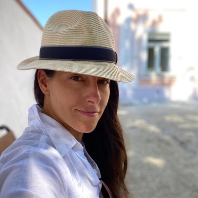

Co říkají klientky
Eva Mařicová
práce s tělem, myslí a přírodou
Pokud hledáte někoho, kdo vám pomůže vytvořit web na míru, Martinu doporučuji všemi deseti.
Dlouho jsem chtěla mít vlastní web. Jednou jsem už spolupráci s jinou webařkou začala, ale nakonec jsme ji nedokončily – nebylo to ono. Na Martinu jsem si vzpomněla proto, že jsem věděla, jak je precizní a že dokáže přizpůsobit řešení na míru.
Začaly jsme první verzí na základě dotazníku, ale brzy jsme obě cítily, že tudy cesta nevede. Martina mě do ničeho netlačila – naopak přišla s jiným přístupem, novými nápady a dala mi prostor věci promyslet.
Velkým posunem byly i texty – pomohla mi je ujasnit, nasměrovat a dotáhnout do finální podoby. Web nakonec vznikl a i když na něm budeme dál postupně pracovat, už teď mám jasný základ, o který se můžu opřít.
Děkuji za trpělivost a individuální přístup. Pokud hledáte někoho, kdo vám pomůže vytvořit web na míru a opravdu se přizpůsobí vaší situaci, Martinu doporučuji všemi deseti.
Barbora Lacena
estetická kosmetika a vzdělávání
Je obrovská úleva mít za sebou člověka, který ví, co dělá – a dělá to dobře.
Než jsem začala spolupracovat s Martinou, byla jsem v technických věcech úplně ztracená. Web, nastavení, e-shop… všechno mi zabíralo spoustu času a pořád jsem řešila, co kde nefunguje. Měla jsem v tom chaos a spousta věcí nebyla nastavená správně.
S Martinou tohle zmizelo během chvíle. Je milá, trpělivá a všechno dokáže vysvětlit jednoduše a srozumitelně. Zároveň tomu opravdu rozumí a dokáže to převést do reality.
Web, který vytvořila, je přesně podle mě – není to žádná šablona, ale stránky, ve kterých vidím sebe, svůj styl i svoje podnikání. Dnes díky ní šetřím čas i nervy. Vím, že je o web i e-shop postaráno a můžu se věnovat svojí práci. Je obrovská úleva mít za sebou člověka, který ví, co dělá – a dělá to dobře.
Pokud nad spoluprací s Martinou váháte, opravdu nemusíte. Je spolehlivá, schopná a hlavně lidská – a to se dnes cení nejvíc.
Jana Ondrušková
fyzioterapie pro miminka, děti i dospělé
Vytvořila mi krásný nový web, propojila platby, zajistila e-maily – vše rychle, efektivně a s maximální precizností.
Protože jsem chtěla rozjet mé on-line podnikání, tak jsem si zakoupila velký kurz, kde mě krok po kroku naváděli, abych si vše potřebné nastavila. Pro mě jako nepolíbenou technickými dovednostmi to bylo velmi časově náročné.
Narazila jsem tam ale na skvělou virtuální asistentku a webařku Martinu a ta mi pomohla s technickými záležitostmi a já musím říct, že jsem nadmíru spokojená. Vytvořila mi krásný nový web, propojila platby, zajistila e-maily potřebné k objednávkám – vše rychle, efektivně a s maximální precizností.
Oceňuji její ochotu, komunikaci a schopnost najít vždy řešení na míru. Pokud hledáte spolehlivého odborníka na web a technické záležitosti, Martinu mohu jedině doporučit!

Petra – Krotitelka šatníku
osobní styl a práce s šatníkem
Martina nejenže všechno skvěle naprogramovala, ale hlavně nad věcmi opravdu přemýšlela.
"Chtěla jsem jen jedno – aby byl můj web hezký. A přesně to se mi splnilo. Martina nejenže všechno skvěle naprogramovala, ale hlavně nad věcmi opravdu přemýšlela. Nic nebylo jen „Tak to děláme vždycky", naopak – hledala řešení, která budou dávat smysl pro mě a můj projekt.
Komunikace byla rychlá, operativní a hlavně vždy v pohodě.
Žádné složitosti
Žádné tlačení do něčeho, co nechci
Prostě spolupráce, jakou si člověk přeje. Jestli hledáte někoho, kdo váš web udělá hezký (a zároveň funkční), Martina je jasná volba!"
Adéla Vejvodová
zakladatelka MINDSET BOOSTER
Martina je přesně typ asistentky, kterou si online podnikatelka přeje mít na dlouhodobou intenzivní spolupráci
Pokud bych měla popsat dokonalou virtuální asistentku, měla by tyto kvality: 100% spolehlivost, inteligence, samostatnost, pečlivost, rychlost, pracovitost, loajalita. A to jsou přesně kvality, které má Martina Vašnovská. Její energie je nakažlivá a namotivuje vás k dokončení všeho, co máte zatím jen v hrubých obrysech v hlavě.
Těžko lze slovy vyjádřit, jakou úlevu přináší člověku možnost předat technickou část podnikání někomu schopnému, o kom víte, že: to udělá lépe než vy, za kratší čas, ušetří vám tím spoustu energie a přinese dokonalý výsledek.
Martinu doporučuji každému, kdo chce podnikat efektivně, naplno využívat svou zónu génia a neztrácet zbytečně čas a energii čímkoliv jiným.
Ivana Dudková
Vyživená žena
Jsem zatím se spoluprací moc spokojená, už mi i od Martiny přišly nápady na zlepšení.
Přemýšlí o věcech a má přehled, co je potřeba a co funguje. Trvalo to… moc jsem chtěla tvořit blog, jenže se mi to na webu nějak pokazilo, nefungovalo to a já neměla kapacitu přijít na to, jak na to:-). Nějak jsem se zdráhala říct o pomoc… a tak blog několik měsíců stál.
Až mi přišla do cesty Martina Vašnovská, no já mám svoji VA :-). Martina je velice praktická, precizní a rychlá. Neptá se zbytečně, poradí si s mnohým sama podle vlastního úsudku. Je velice trpělivá :-).
Zprovoznila mi blog, vytvořila šablonu a ukázala mi, jak to celý používat, abych to zase celý nezmatlala. Už si Martinu na pomoc nechám, je to taková úleva nemuset všechno sama.
Eva Oršel
Terapie Darová
Martina odvedla skvělou práci za příznivou cenu k mojí maximální spokojenosti.
Martinu jsem poznala „náhodou", když jsem si nevěděla rady se svým webem a potřebovala jsem ho upgradovat podle svých představ a zároveň zajistit i jeho propojení a celkovou funkčnost.
Byla velice milá, sympatická a ochotná a já jí dala plnou důvěru. Stačil jeden videocall, abychom se vzájemně poznaly a nastínily si představu a možnosti a bylo to. Pak už vše frčelo jak na drátkách.
Pokud hledáte šikovnou a spolehlivou VA, Martina je skvělá volba a mohu ji jen a jen doporučit.
Kristy Roller
Martina skvěle a rychle komunikuje, se spoluprací s ní jsem spokojená.
Hledala jsem, kdo by mi pomohl s mým webem a technickým nastavením online podnikání. Teď aktuálně mi řešila celé nastavení ohledně produktu – magnetu zdarma. Jde o sběr kontaktů pro mou službu naladění na talenty a potenciál.
Byla v intenzivním kontaktu s podporou Ecomailu, kam jsem nedávno přecházela. Pravděpodobně by mi trvalo opravdu dlouhou dobu nastavit vše technicky v Ecomailu, pokud bych to dělala sama.
Marťa mi přeposílala celou komunikaci, takže jsem byla v obraze a věděla jsem, co se děje. Děkuji za vyřešení. Plánuju udělat větší propagaci mého online kurzu s dětskou jógou, a Marťa mi zase bude dělat „technickou oporu v zádech."
Připravena začít?
Napište mi a podíváme se na to spolu.
Bez závazků, s konkrétním výstupem.